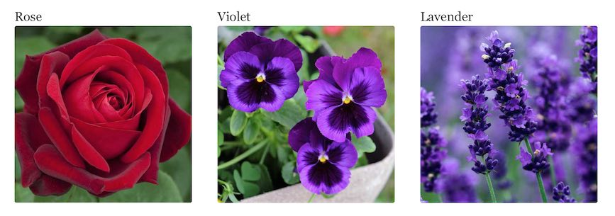

Sourcing multiple images from JSON in Gatsby
Starting to use GatsbyJS, you can
see how to serve up a single image using the built in
<Img /> component, but serving multiple images is a
bit trickier.
In this example, let's say we have some pictures of flowers we would
like to display along with their names. Let's add them to our project in
a folder called flowers at src/images/flowers
Next, we want to add our JSON with information on each flower to
src/data/Flowers.json
Flowers.json
[ { "name": "Rose", "src": "../images/flowers/flower-1.jpeg" }, { "name": "Violet", "src": "../images/flowers/flower-2.jpeg" }, { "name": "Lavender", "src": "../images/flowers/flower-3.jpeg" } ]
In order to work with JSON files, Gatsby needs a plugin called gatsby-transformer-json. This lets GraphQL queries find and process your JSON.
Install the plugin using
npm install --save gatsby-transformer-json then add the
following to your gatsby-config.js
plugins array:
gatsby-config.js
`gatsby-transformer-json`, { resolve: `gatsby-source-filesystem`, options: { path: `./src/data/`, }, },
Now, when we run gatsby develop we should be able to use
GraphiQL to see our JSON file. Open up
GraphiQL
and run the following query:
query MyQuery {
allFlowersJson {
nodes {
name
src {
childImageSharp {
fluid {
src
}
}
}
}
}
}
This should give you an output that looks like this:
{
"data": {
"allFlowersJson": {
"nodes": [
{
"name": "Rose",
"src": {
"childImageSharp": {
"fluid": {
"src": "/static/8cb893854de0297ac9b460c1b75daadd/b17c1/flower-1.jpg"
}
}
}
},
{
"name": "Violet",
"src": {
"childImageSharp": {
"fluid": {
"src": "/static/51df185e9a48850a6e8ed2678e060c99/ca45b/flower-2.jpg"
}
}
}
},
{
"name": "Lavender",
"src": {
"childImageSharp": {
"fluid": {
"src": "/static/a4ab0eccf7b88fdd9b9ead3cccb975d1/b17c1/flower-3.jpg"
}
}
}
}
]
}
}
}
Now that we have seen how we can access these files using GraphQL, we
can query them inside a component. Let's create one in
src/components
flowers.js
import React from "react" import { useStaticQuery, graphql } from "gatsby" import Img from "gatsby-image" export const Flowers = () => { const data = useStaticQuery(graphql` query { allFlowersJson { nodes { name src { childImageSharp { fluid(maxWidth: 300) { ...GatsbyImageSharpFluid } } } } } } `) return ( <div> {data.allFlowersJson.nodes.map(flower => ( <div style={{ maxWidth: `300px`, marginBottom: `1.45rem` }}> <div>{flower.name}</div> <Img fluid={flower.src.childImageSharp.fluid} /> </div> ))} </div> ) }
Now, all we need to do is add this component to index.js or
wherever we want to display it.
index.js
import React from "react" import { Link } from "gatsby" import Layout from "../components/layout" import Image from "../components/image" import SEO from "../components/seo" import { Flowers } from "../components/flowers" const IndexPage = () => ( <Layout> <SEO title="Home" /> <h1>Hi people</h1> <p>Welcome to your new Gatsby site.</p> <p>Now go build something great.</p> <div style={{ display: `inline-block`, width: `300px`, marginBottom: `1.45rem`, }}> <Image /> </div> <Flowers /> <Link to="/page-2/">Go to page 2</Link> </Layout> ) export default IndexPage
And here's the result:
That's how you can source images in Gatsby from JSON documents. If you want, you can add more properties to your JSON, just be sure to add them to your GraphQL query so they get returned for you to use.